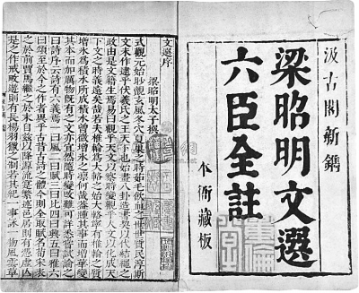

昭明文选¶

文选序¶
式观元始，眇觌玄风，冬穴夏巢之时，茹毛饮血之世，世质民淳，斯文未作。逮乎伏羲氏之王天下也，始画八卦，造书契，以代结绳之政，由是文籍生焉。
《易》曰：“观乎天文，以察时变；观乎人文，以化成天下。”文之时义，远矣哉！若夫椎轮为大辂之始，大辂宁有椎轮之质？增冰为积水所成，积水曾微增冰之凛，何哉？盖踵其事而增华，变其本而加厉。物既有之，文亦宜然。随时变改，难可详悉。
尝试论之曰：《诗序》云：“诗有六义焉：一曰风，二曰赋，三曰比，四曰兴，五曰雅，六曰颂。”至于今之作者，异乎古昔。古诗之体，今则全取赋名。荀、宋表之於前，贾、马继之于末。自兹以降，源流实繁。述邑居则有“凭虚”、“亡是”之作。戒畋游则有《长杨》《羽猎》之制。若其纪一事，咏一物，风云草木之兴，鱼虫禽兽之流，推而广之，不可胜载矣。
又楚人屈原，含忠履洁，君匪从流，臣进逆耳，深思远虑，遂放湘南。耿介之意既伤，壹郁之怀靡诉。临渊有怀沙之志，吟泽有憔悴之容。骚人之文，自兹而作。
诗者，盖志之所之也。情动于中而形于言：《关雎》《麟趾》，正始之道著；桑间濮上，亡国之音表。故风雅之道，粲然可观。自炎汉中叶，厥途渐异：退傅有“在邹”之作，降将著“河梁”之篇。四言五言，区以别矣。又少则三字，多则九言，各体互兴，分镳并驱。
颂者，所以游扬德业，褒赞成功。吉甫有“穆若”之谈，季子有“至矣”之叹。舒布为诗，既言如彼；总成为颂，又亦若此。次则箴兴于补阙，戒出于弼匡，论则析理精微，铭则序事清润，美终则诔发，图像则赞兴。又诏诰教令之流，表奏笺记之列，书誓符檄之品，吊祭悲哀之作，答客指事之制，三言八字之文，篇辞引序，碑碣志状，众制锋起，源流间出。譬陶匏异器，并为入耳之娱；黼黻不同，俱为悦目之玩。作者之致，盖云备矣！
余监抚余闲，居多暇日。历观文囿，泛览辞林，未尝不心游目想，移晷忘倦。自姬汉以来，眇焉悠邈。时更七代，数逾千祀。词人才子，则名溢于缥囊；飞文染翰，则卷盈乎缃帙。自非略其芜秽，集其清英，盖欲兼功，太半难矣！
若夫姬公之籍，孔父之书，与日月俱悬，鬼神争奥，孝敬之准式，人伦之师友，岂可重以芟夷，加之剪截？老、庄之作，管、孟之流，盖以立意为宗，不以能文为本，今之所撰，又以略诸。
若贤人之美辞，忠臣之抗直，谋夫之话，辨士之端，冰释泉涌，金相玉振。所谓坐狙丘，议稷下，仲连之却秦军，食其之下齐国，留侯之发八难，曲逆之吐六奇，盖乃事美一时，语流千载，概见坟籍，旁出子史。若斯之流，又亦繁博。虽传之简牍，而事异篇章，今之所集，亦所不取。至于记事之史，系年之书，所以褒贬是非，纪别异同，方之篇翰，亦已不同。若其赞论之综缉辞采，序述之错比文华，事出於深思，义归乎翰藻，故与夫篇什，杂而集之。
远自周室，迄于圣代，都为三十卷，名曰《文选》云耳。
凡次文之体，各以汇聚。诗赋体既不一，又以类分；类分之中，各以时代相次。
曹丕-典论论文¶
文人相轻，自古而然。傅毅之于班固，伯仲之间耳，而固小之，与弟超书曰：“武仲以能属文为兰台令史，下笔不能自休。”夫人善于自见，而文非一体，鲜能备善，是以各以所长，相轻所短。里语曰：“家有弊帚，享之千金。”斯不自见之患也。今之文人：鲁国孔融文举、广陵陈琳孔璋、山阳王粲仲宣、北海徐干伟长、陈留阮瑀元瑜、汝南应玚德琏、东平刘桢公干，斯七子者，于学无所遗，于辞无所假，咸以自骋骥騄于千里，仰齐足而并驰。以此相服，亦良难矣！盖君子审己以度人，故能免于斯累，而作论文。
王粲长于辞赋，徐干时有齐气，然粲之匹也。如粲之《初征》、《登楼》、《槐赋》、《征思》，干之《玄猿》、《漏卮》、《圆扇》、《橘赋》，虽张、蔡不过也，然于他文，未能称是。琳、瑀之章表书记，今之隽也。应玚和而不壮；刘桢壮而不密。孔融体气高妙，有过人者；然不能持论，理不胜辞；至于杂以嘲戏；及其所善，扬、班俦也。
常人贵远贱近，向声背实，又患闇于自见，谓己为贤。夫文本同而末异，盖奏议宜雅，书论宜理，铭诔尚实，诗赋欲丽。此四科不同，故能之者偏也；唯通才能备其体。
文以气为主，气之清浊有体，不可力强而致。譬诸音乐，曲度虽均，节奏同检，至于引气不齐，巧拙有素，虽在父兄，不能以移子弟。
盖文章，经国之大业，不朽之盛事。年寿有时而尽，荣乐止乎其身，二者必至之常期，未若文章之无穷。是以古之作者，寄身于翰墨，见意于篇籍，不假良史之辞，不托飞驰之势，而声名自传于后。故西伯幽而演《易》，周旦显而制《礼》，不以隐约而弗务，不以康乐而加思。夫然则古人贱尺璧而重寸阴，惧乎时之过已。而人多不强力；贫贱则慑于饥寒，富贵则流于逸乐，遂营目前之务，而遗千载之功。日月逝于上，体貌衰于下，忽然与万物迁化，斯志士之大痛也！
融等已逝，唯干著论，成一家言。
阅读记录¶
| 序号 | 章节名 | 阅读状态 | 开始日期 | 结束日期 | 评分 | 作者 |
|---|---|---|---|---|---|---|
| 0 | 昭明文选序 | 阅读中 | 萧统 | |||
| 1 | 两都赋二首 | 汉赋太长了先跳过 | 班固(孟坚) | |||
| 2 | 西京赋一首 | 张衡(平子) | ||||
| 3 | 东京赋一首 | 张衡(平子) | ||||
| 4 | 南都赋一首 | 张衡(平子) | ||||
| 5 | 三都赋序一首 | 左思(太冲) | ||||
| 9 | 蜀都赋一首 | 左思(太冲) | ||||
| 10 | 吴都赋一首 | 左思(太冲) | ||||
| 11 | 魏都赋一首 | 左思(太冲) | ||||
| 12 | 甘泉赋一首并序 | 扬雄(子云) | ||||
| 13 | 藉田赋一首 | 潘岳(安仁) | ||||
| 14 | 子虚赋一首 | 司马相如(长卿) | ||||
| 15 | 上林赋一首 | 司马相如(长卿) | ||||
| 16 | 羽猎赋一首并序 | 扬雄(子云) | ||||
| 17 | 长杨赋一首并序 | 扬雄(子云) | ||||
| 18 | 射雉赋一首 | 潘岳(安仁) | ||||
| 19 | 北征赋一首 | 班彪(叔皮) | ||||
| 20 | 东征赋一首 | 班昭(曹大家) | ||||
| 21 | 西征赋一首 | 潘岳(安仁) | ||||
| 22 | 登楼赋一首 | 王粲(仲宣) | ||||
| 23 | 游天台山赋一首并序 | 孙绰(兴公) | ||||
| 24 | 芜城赋一首 | 鲍照(明远) | ||||
| 25 | 鲁灵光殿赋一首并序 | 王延寿(文考) | ||||
| 26 | 景福殿赋一首 | 何晏(平叔) | ||||
| 27 | 海赋一首 | 木华(玄虚) | ||||
| 28 | 江赋一首 | 郭璞(景纯) | ||||
| 29 | 风赋一首 | 宋玉 | ||||
| 30 | 秋兴赋一首并序 | 潘岳(安仁) | ||||
| 31 | 雪赋一首 | 谢惠连 | ||||
| 32 | 月赋一首 | 谢庄(希逸) | ||||
| 33 | 鵩鸟赋一首并序 | 贾谊 | ||||
| 34 | 鹦鹉赋一首并序 | 祢衡(正平) | ||||
| 35 | 鹪鹩赋一首并序 | 张华(茂先) | ||||
| 36 | 赭白马赋一首并序 | 颜延之(延年) | ||||
| 37 | 舞鹤赋一首 | 鲍照(明远) | ||||
| 38 | 幽通赋一首 | 班固(孟坚) | ||||
| 39 | 思玄赋一首 | 张衡(平子) | ||||
| 40 | 归田赋一首 | 背诵中 | 2026-4-22 | 张衡(平子) | ||
| 41 | 闲居赋一首并序 | 潘岳(安仁) | ||||
| 42 | 长门赋一首并序 | 司马相如(长卿) | ||||
| 43 | 思旧赋一首并序 | 向秀(子期) | ||||
| 44 | 叹逝赋一首并序 | 陆机(士衡) | ||||
| 45 | 怀旧赋一首并序 | 潘岳(安仁) | ||||
| 46 | 寡妇赋一首并序 | 潘岳(安仁) | ||||
| 47 | 恨赋一首 | 江淹(文通) | ||||
| 48 | 别赋一首 | 江淹(文通) | ||||
| 49 | 文赋一首并序 | 陆机(士衡) | ||||
| 50 | 洞箫赋一首 | 王褒(子渊) | ||||
| 51 | 舞赋一首并序 | 傅毅(武仲) | ||||
| 52 | 长笛赋一首并序 | 马融(季长) | ||||
| 53 | 琴赋一首并序 | 嵇康(叔夜) | ||||
| 54 | 笙赋一首 | 潘岳(安仁) | ||||
| 55 | 啸赋一首 | 成公绥(子安) | ||||
| 56 | 高唐赋一首并序 | 宋玉 | ||||
| 57 | 神女赋一首并序 | 宋玉 | ||||
| 58 | 登徒子好色赋一首并序 | 宋玉 | ||||
| 59 | 洛神赋一首并序 | 曹植(子建) |